Copyright © 2000, 2001, 2003, 2004, 2005 The KMyMoney Development Team
KMyMoney, the personal finances manager for KDE.
This handbook describes KMyMoney version 0.7.
Table of Contents
- 1. Introduction
- 2. Using KMyMoney for the first time
- Running KMyMoney for the first time
- The main window
- Creating a new file
- Creating account(s)
- Opening / viewing accounts
- Changing account properties
- Deleting accounts
- What next
- Creating transactions
- Entering transactions
- Schedules
- Categories
- Payees
- Importing financial data
- Searching for transactions
- Reconciliation
- Backing up
- Contacting the developers / Reporting Bugs
- 3. What's new in this release
- 4. KMyMoney Files
- 5. Institutions
- 6. Accounts
- 7. Categories
- 8. Payees
- 9. Transactions - Under development - Roger
- 10. Schedules
- 11. Ledgers Screen.
- 12. Investments - Under development - THB/Ace
- 13. Currencies
- 14. Reconciliation - Under development - MTE
- 15. Reports
- 16. Importing and Export
- 17. Loans - Under development - Darin
- 18. KMyMoney Settings - Under development - MTE
- 19. Search Transactions
- 20. File Formats
- 21. Integrity Checks - Under development - UNASSIGNED
- 22. Reference
- 23. Other Documentation - Under development - MTE
- 24. Credits - Under development - MTE
List of Tables
Table of Contents
Put simply KMyMoney is a personal finances manager. As with other applications that offer to manage your finances KMyMoney provides a number of features and tools that assist in creating and maintaining your accounts.
Based on tried and tested double entry accounting principles KMyMoney ensures that your finances are kept in correct order.
Along with managing accounts KMyMoney also manages your Income accounts, Expenditure accounts, Institutions (banks), Categories (income & expense accounts), Payees and Scheduled Transactions giving you a comprehensive view of your financial situtation.
In its present version KMyMoney does not scale well to the average business needs. Due to the complexity and processes needed KMyMoney is not recommended for business use although plans are underway to provide client / supplier / document features through a plugin.
KMyMoney is not a clone, and although many of the features present in KMyMoney can be found in other similar applications, KMyMoney tries to present an individual and unique view of your finances.
Table of Contents
- Running KMyMoney for the first time
- The main window
- Creating a new file
- Creating account(s)
- Opening / viewing accounts
- Changing account properties
- Deleting accounts
- What next
- Creating transactions
- Entering transactions
- Schedules
- Categories
- Payees
- Importing financial data
- Searching for transactions
- Reconciliation
- Backing up
- Contacting the developers / Reporting Bugs
After starting KMyMoney and the application has fully loaded two windows will be opened. The top most window, 'Tip of the Day' presents a method for the application to let you know about important or useful pieces of information.
It is highly recommended to quickly read through these tips by pressing on the and buttons at the bottom of the window.
Once you have read the tips the window can be closed and will re-open each time KMyMoney is started. To stop this default behaviour uncheck the appropriate option on the Tip of the Day window.
Note
Tips can be read at anytime by selecting from the menu within KMyMoney.
All tips have been extracted from the Frequency Asked Questions list (FAQ) that provides more detailed help and can be found on the project website and in this manual.
Please click on to close the Tip of the Day dialogue.
The KMyMoney main window consists of four major parts
A. The menu bar
B. The toolbar
C. The View selector
D. The view
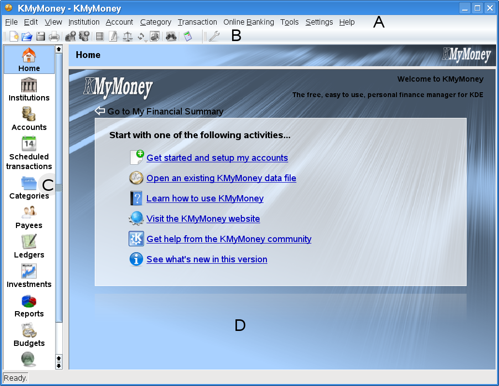
The menu and toolbars provide access to the features of KMyMoney and allow you to Create files or configure how KMyMoney operates.
The view selector consits up to ten icons in the left side of the main window depending upon the software provided by your system. By clicking on an icon the view window on the right hand side is loaded with the appropriate view of your financial data. Each view provides a unique representation of your financial situation and allows you to view or edit the information shown.
The view selector contains the following icons
A configurable overview of your current financial situtation (or an introduction page when no data exists).
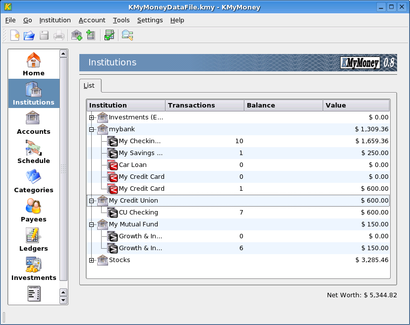 All of your accounts displayed in a hierachy.
All of your accounts displayed in a hierachy.
Your recurring bills and deposits.
Special accounts that provide a means for you to group associated transactions.
All Payees used by KMyMoney.
Your account transactions.
Your portfolio summary.
A collection of useful reports, providing alternate views of you financial data.
Used by the online banking module to provide feedback on running processes.
To create a new file you can either select from the menu or choose the icon from the toolbar.
Select to create a new file.
Once this has been selected KMyMoney will open the personal information dialogue box asking for your name and address.
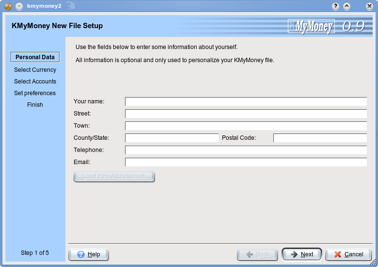
Any information entered here is not currently used by KMyMoney but is used to personalise your file and will be required in future releases when features such as reporting and online banking are fully implemented. All fields are optional and you can use KMyMoney without entering any information now. If KMyMoney requires any personal information in future releases and finds none, you will be prompted to enter the relevant data then.
Please enter your name and address or nothing and press .
KMyMoney supports multiple currencies. To set your base currency, (the currency you use day to day), select the appropriate symbol from the list provided.
Because this is a new file KMyMoney will now import a set of default accounts with your interaction. A message box is first shown reminding you that this step involves selecting the correct file to import into KMyMoney.
Please read the message and click on .
Next KMyMoney shows the standard KDE File Open dialogue box allowing you to select the appropriate file for your country/region. This window should list various language dependant directories containing files ending with the file extension 'kmt'. If no files are listed matching this criteria then please navigate to $KDEDIR/share/apps/kmymoney2. On a Mandrake 10 System this relates to /usr/share/apps/kmymoney2.
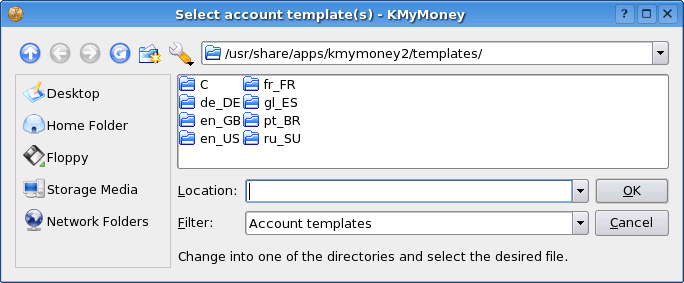
Choose the appropriate accounts file and click on to create the file.
After KMyMoney has finished loading the default accounts your financial summary will be displayed. As you have defined no accounts to hold your transactions this is currently empty.
You can create an account in one of two ways both of which are described here:
- Using the menu
To create an account using the menu select from the menu
- Using the Accounts view
To create an account using the accounts view click on the Accounts icon in the view selector and then right click on the Asset tree icon in the right hand view and select from the popup menu. The Asset tree holds all of your accounts that are an asset. Assets, and all the other account types, are discussed in more detail later in this manual.
Tip
Note that KMyMoney uses the context menus a lot throughout the whole application.
Creating a new account by either method opens the New Account Wizard. This wizard will take you step by step through the process of creating an account, gathering the required information at each step. To navigate through the pages click on the and buttons.
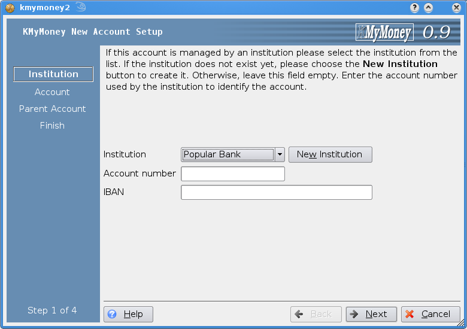
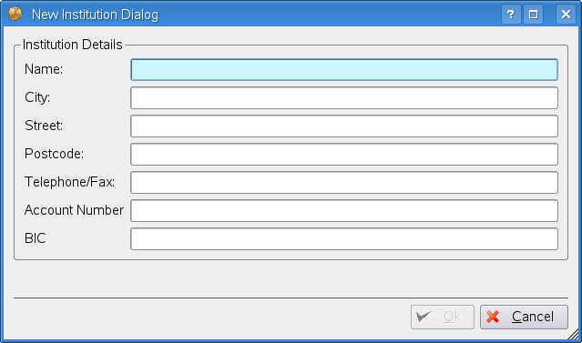
As with the personal information dialogue, this data is not currently used by KMyMoney but will be required by future releases for certain features. Once you have entered the name click on to select the institution or click on to not use an institution for this account. To select an existing institution simply click on the institution drop down list.
Enter an institution if needed and click on .
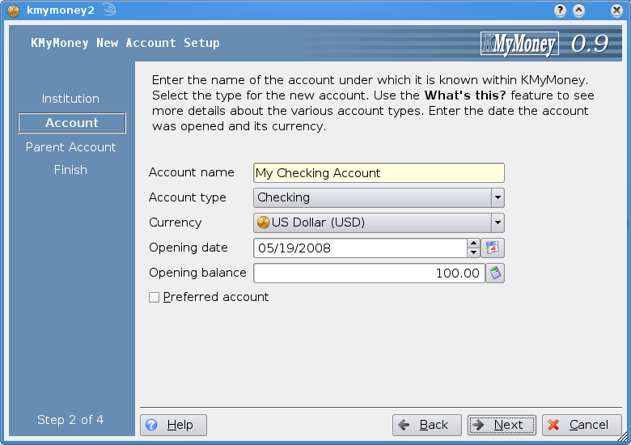
From the next page you can select an account type. Seven choices are displayed:
- Current
A normal current account, the type you get with any high street bank.
- Savings
A normal savings account, the type you get with any high street bank.
- Credit Card
An account to represent your credit card.
- Cash
A general purpose account typically used for accounts not held at a bank.
- Loan
An account to manage a loan.
- Asset
An account to manage assets.
- Liability
An account to manage a liability such as money you borrowed.
Select the account type and click on . Note, if you have selected a Loan account type please see the loans section for information on how to proceed. Any other account type please read on.
You can set the account name in the next step.
Enter the account name, usually your title, initials and surname if it is a bank account, into the required fields.
To make this account your primary account check the tickbox labelled Preferred account This account will then be used by default within KMyMoney for your convenience.
To proceed to the next step click on .
The next step prompts for the account number.
If this is a bank account then enter the the account number in the required field. If this not a bank account or you do not know the account number the field can be left blank.
To proceed to the next step click on .
The final step, (except for Credit Card account types), is to set the opening date and balance for the account.
If this is an existing bank account this information can be found on your statement otherwise the opening balance can be left at zero if it is a new account.
If this is not a Credit Card account then all required information has been gathered and you can add the account to KMyMoney by clicking on the button. If you do not wish to add the account click on .
When creating a Credit Card account one more step is required; creating a scheduled transaction.

A transaction can be setup to automatically pay the balance for you. To create the transaction make sure the tick box is checked and enter the required information. Click on to add the account and create the scheduled transaction if one was specified.
Click on to create the account.
To open an account in the Ledgers view you can either click on the link to the account from the Home view, or click on the  Ledgers icon in the view selector and select the account in the drop down list at the top of the view.
Ledgers icon in the view selector and select the account in the drop down list at the top of the view.
To change the account details select the Accounts view and find the account in the hierarchy listed.
Right click on the chosen account and select from the popup menu to open the account details dialogue.
Alternatively the account details can be changed through the Ledgers view via the button in the command frame.
To delete an account find the account you wish to delete in the accounts view and after right clicking on the entry to show the popup menu select from the popup menu.
Now that one or more accounts exist in KMyMoney your account summary is shown in the Home view and you can create transactions manually or through the Schedule view.
Open an account using either of the two previously mentioned methods to continue.
The Ledgers view is where most of the functionality of KMyMoney lies. The view consists of these components:
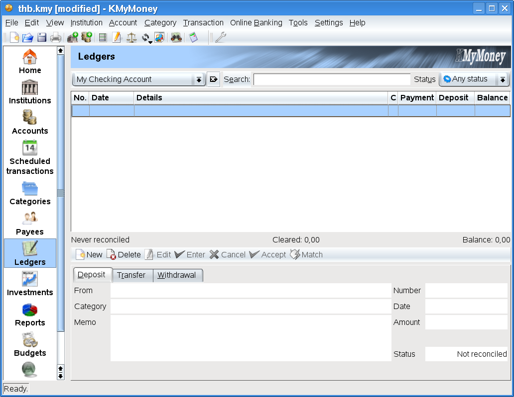
The account drop down list
The transaction list
The transaction input form
You can select an account via the account drop down list. Note that depending upon the type of the account the transaction input form at the bottom of the view changes.
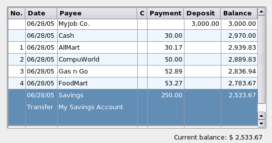
After you have entered some transactions they are displayed in the transaction list. From here you can also change transaction properties or even create new transactions directly in the list.

Two methods of entering transactions into the ledger are available; using the transaction input form and entering the data directly into the transaction list. The transaction form is displayed by default and this is the method we will discuss first.
Depending upon the transaction you wish to enter there are several different tabs available in the transaction form. Click on the tab that best describes your transaction and the transaction form will load several fields ready for your input.
Please note that the actual transaction method is not directly used by KMyMoney but is purely for grouping/reporting purposes.
If you are unsure what method to choose simply use Deposit for any money going into the account and Withdrawal for money coming out of the account. The transaction methods and the differences between them are discussed in more detail within this manual.
Select the transaction method by clicking on one of the tabs.
Enter the required information using the following notes on the available fields. Note that many fields have 'Auto Completion' turned on. That is the field will try and finish your input for you. If you start typing KMyMoney will offer alternatives matching the characters you have entered so far. To select an entry click on it using the mouse or keyboard, or if your entry is not listed keep typing to add the new value. The next time you type the value in, KMyMoney will find it for you after the first few characters have ben input.
The Payee is who the money came from/to. If the payee is a new entry KMyMoney will ask if you wish to add this to the Payees view. Any other information related to a payee, such as the address details can be updated in this view later.
The Category lets you associate this transaction with another account for accounting purposes and to let you create reports and or group certain transactions. Type the name of the category into the required field. If you have entered the category and it does not exist then KMyMoney will prompt you to create a new one.
If this transaction is a multipart transaction, i.e you wish to associate the transaction with more than one category, KMyMoney can let you do that. An example transaction might be a cash machine withdrawal of 50 that you use 10 on food, 20 on beer and 20 as spare cash. The transaction will therefore be assigned three categories, Food, Beer and Cash. To assign these categories to the transaction click on the button. This brings up a dialog window listing the currently assigned categories if any. Enter the categories, creating any new ones as needed, and input the amount per category. Click on to save the assignments. Note that the category field in the transaction input form now displays Split transaction
A one line memo can be entered if you wish to help you remember what the transaction was for.
The cheque number can be entered if needed. Note that the cheque number can always be visible if desired. This is configured in the Settings dialog.
The transaction date can also be entered to specify when the transaction took place. See the special KMyMoney fields section for more information on the date input field and it can be used to make entering dates quicker and easier.
The second method of entering transactions into the ledger involves editing the transaction list itself directly.
To do this you must first let KMyMoney know that you don't want to use the transaction from by opening the settings dialogue and unchecking the Use transaction form option.
This is performed by selecting from the menu bar and selecting the  Register icon from the list on left. The option to uncheck is labelled Show transaction form. When finished click on to be ready to directly enter transactions.
Register icon from the list on left. The option to uncheck is labelled Show transaction form. When finished click on to be ready to directly enter transactions.
To enter a transaction into the register you can now either double click on the entry or press Enter when the transaction is highlighted. The Up and Down arrow keys let you navigate through the list. After pressing Enter or double clicking on an entry, the transaction list displayes the fields required to enter the transaction and waits for input.
To move through the fields press the Tab key and when done press Enter to save the changes or Esc to cancel.
Which method you use to enter transactions is up to you and is a matter of personal preference.
To edit a transaction select it in the list view and either click on in the transaction input form or right click on the entry and select from the popup menu. If you are editing transactions directly in the list you can edit the transaction simply by double clicking on an entry or by pressing Enter when a transaction is highlighted.
A Schedule is a transaction that occurs one or more times over a certain period of time. Sometimes called recurring transactions a typical example is your pay cheque that you receive every month or week. Rather than have to enter the transaction details each time you get paid, you can instruct KMyMoney to create a schedule that will enter a transaction for you when you get paid.
The schedule consists of two main parts; the schedule data and the transaction itself.
The schedule data records the occurrence of the schedule, ie. when the transaction is to be entered into the ledger and how. The transaction data records normal transaction information and will be entered in to the ledger as-is.
There are four different types of schedule at the moment:
A Bill Schedule is used to create a schedule for money going out of your account such as a Gym membership.
A Deposit Schedule is used to create a schedule for money coming into your account such as a pay cheque.
A Transfer Schedule is used to create a schedule for money coming out of one account and into another. A typical example is a credit card payment.
A Loan Schedule is a special type of schedule and is created when dealing with Loan accounts.
Open the schedule view by clicking on the Schedule  icon in the view selector.
icon in the view selector.
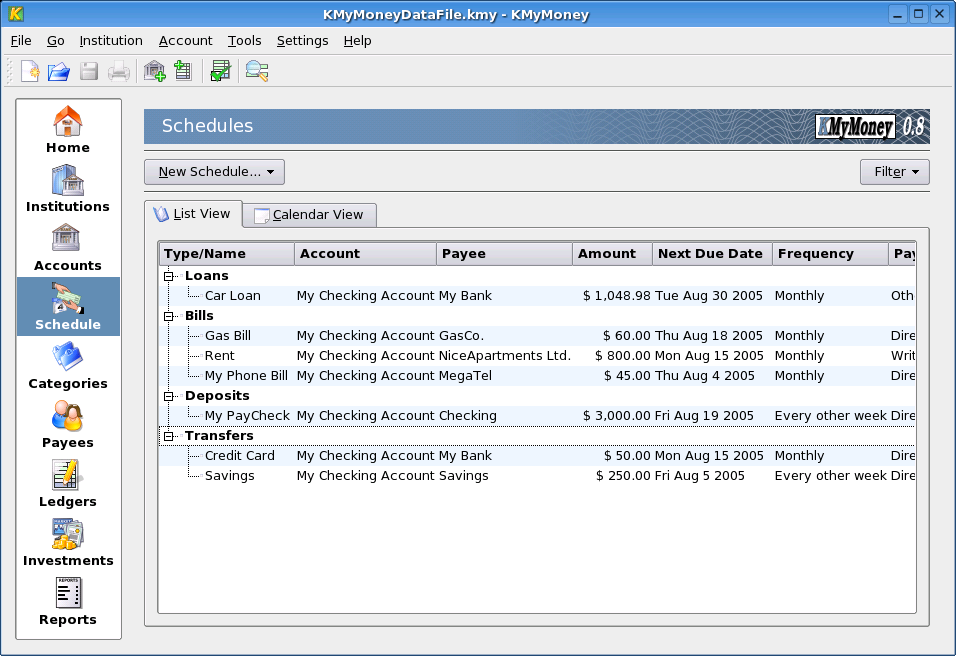
The schedule view consists of a tabbed list view along with a create button above it. At the moment this list is empty. To create a new schedule click on the button and select the type of schedule you wish to create.
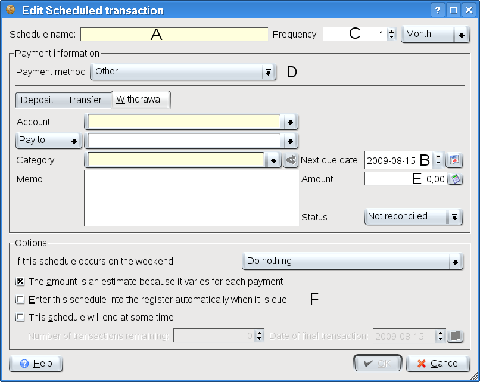
A new dialogue window is now shown prompting for the schedule and transaction data. The schedule data includes the following fields:
Schedule Name
Next due date
Frequency
Estimated amount
Schedule options
Enter the schedule name and the next occurence of this schdule into their respective fields. Select the frequency from the drop down list. If the amount varies transaction to transaction make sure to check the Estimate check box and you will be prompted for the correct amount when it is entered into the ledger. Fill in all the transaction fields as you would normally with the ledger view.
At the bottom of the dialogue are some optional fields that can modify how the schedule behaves. If the schedule occurs on a weekend you can choose whether to enter the transaction the previous friday or the next monday. Typically this option is used to replicate some real world operation such as a bank transaction.
To let KMyMoney enter the transaction for you when needed make sure that the check box labelled Enter this into the ledger automatically is checked otherwise when the transaction is due to be entered, KMyMoney will open a dialogue box asking you to confirm that you want it to be entered. This behaviour is configurable and more information can be found in the Settings section.
If you know how many transactions are left or when they are due to finish this information can be entered so the transactions are not entered indefinitely. Check the appropriate tick box and enter the information you have. Only the date or the number of transactions remaining is needed because the other can be calculated.
Enter the required information and click on to continue.
To edit the schedule simply select the entry in the list and right click to bring up the context menu and select .
To delete the schedule simply select the entry in the list and right click to bring up the context menu and select .
The calendar tab presents the schedules in a calendar format so it is easier to see when they occur. To switch to the calendar view click on the tab.
The calendar type can be changed using the button. Currently only two types exist; Week and Month. The monthly view is the default and is usually the most useful. Navigate through the dates using the controls as you would with the date input control.
If any schedules fall on any particular then the number of schedules is displayed.
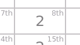
To view the schedule(s) that fall on that day move the mouse cursor over the highlight and a popup window
will be displayed allowing you to view the schedule summary.
If more than one schedule falls on that day you can cycle through them using the buttons at the top of the window.
If you find that the display is cluttered with schedules and you only want to view one type of schedule, then this is possible from the button. After clicking on this button the different schedule types are listed and are checked by default
To remove the type from the calendar view simply uncheck it in the list.
Schedules can be entered in one of three different ways
Manually by right clicking on the list entry
Manually via the popup window in the calendar view
KMyMoney can enter them with or without your interaction upon startup
You can enter a schedule manually be right clicking on the list entry and selecting from the popup menu or by clicking on the button on the popup window in the calendar view.
After selecting either method the Enter Scheduled Transaction dialogue window is shown prompting you with the required information, entered when creating the schedule.
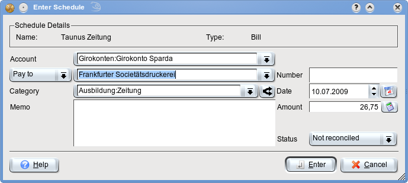
This information can be changed and can be applied to just this one instance of the schedule or to all subsequent transactions. After checking that all the data is correct clicking on will add the transaction to the ledger. If you have changed any of the transaction data a further confirmation of what you intend will be displayed.
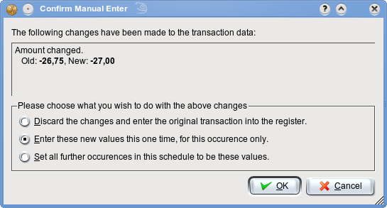
Select what you want to do with the information presented and click or .
Alternatively KMyMoney can check which schedules are due upon startup and enter them for you if the appropriate option was checked when setting up the schedule.
If the option was not checked then KMyMoney will open the previously mentioned dialogue and you can follow the steps mentioned there. KMyMoney will also open the dialogue if the amount is an estimate so you can enter the real amount.
You can also opt to have KMyMoney not check the schedules on startup by deselecting the option in the Settings dialogue and any overdue schedules or schedules due 'today' will be shown in the Home view for you to enter manually.
To maintain categories click on the Categories icon in the view selector.
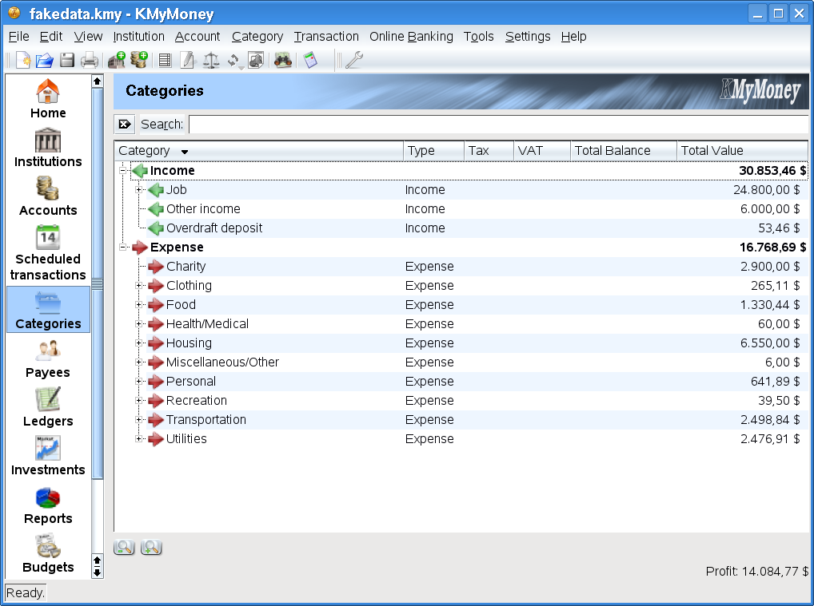
A sub-set of the accounts available in the Accounts view is shown, specifically the Income and Expense account types.
To create a new category select a parent in the tree and right click to bring up the popup menu. Once open select the option. This will open the account details dialogue with the parent account selected.
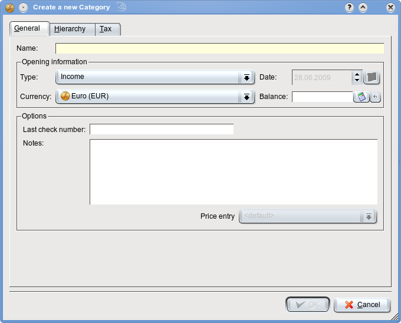
Enter the category name any notes and click on to save the new category.
To edit a cateogry select it in the tree and right click to bring up the popup menu and select .
To maintain payees click on the Payees icon in the view selector.
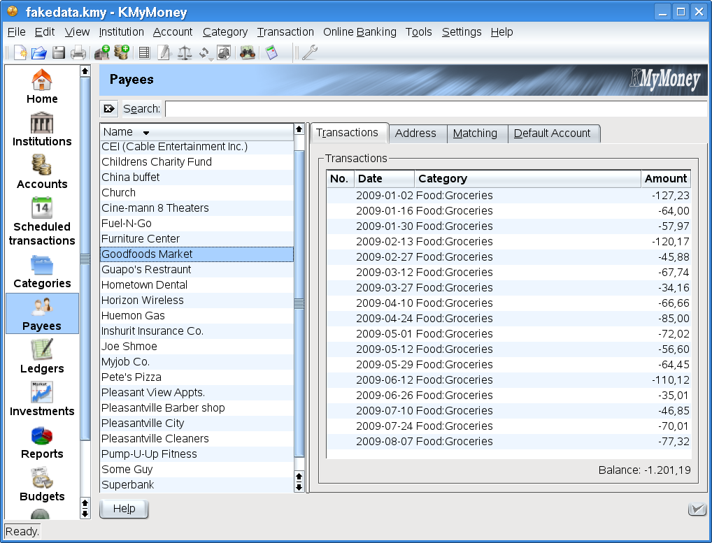
Any transactions associated with the payee are displayed in the list at the right hand side of the view. To enter the address details for the payee enter the required information and click on the button. To delete the payee click on the button.
If you currently use a financial manager application KMyMoney can then import an account's transactions as long as they are in the Quicken Interchange Format (QIF). Most financial programs can export this format and the different applications methods of exporting QIF is not discussed here for brevity.
To import a QIF file select from the menu.
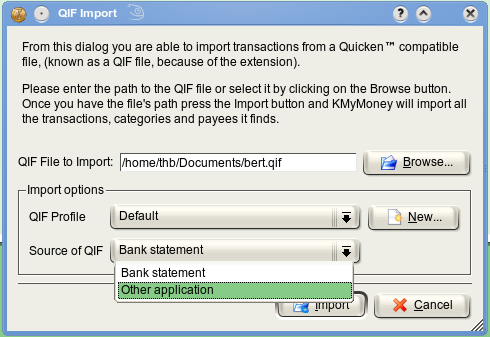
The resulting dialogue prompts for the QIF filename allowing you to locate the file by clicking on the button.
If you want KMyMoney to automatically enter new payees check the appropriate option otherwise KMyMoney will prompt you each time a new payee is found.
Click on to import the QIF file.
During the import process KMyMoney may prompt you to select the account to import to. Make your selection and press to continue.
When KMyMoney has finished importing the QIF transactions the account will be shown with the imported transactions listed in Yellow.

Transaction data can be edited or even deleted if needed. To edit a transaction simply double click on the entry or hit enter when the entry is highlighted. Once finished click on to accept the imported transactions or to remove the imported transactions.
Importing and exporting QIF files is covered in more detail in this section which also covers the QIF profile feature not discussed here.
KMyMoney provides a useful and powerful transaction search facility in the form of the search dialog.
The search dialog can be opened from the toolbar using the Find icon or by selecting from the menu.
The search dialogue contains several tabs each restricting the particular type of transaction you wish to find. Ener the required information and click on . Any transactions found are displayed in the list below the search parameters. Selecting the transaction is then as simple as double clicking on the entry. To re-enter the search parameters click on the button which will cause all the fields to revert to their default values on close the found transactions list.
A full description of the tabs and the input required is discussed in this section.
At some point you will want to reconcile the transactions you have entered with the transactions listed in a statement, be it a bank statement, credit card statement, loan statement or any other statement. Reconciliation involves matching what you have entered with what the statement lists. If any discrepencies are found then either you or the person who created the statement have made a mistake.
To reconcile an account click on the Reconcile Ledgers icon in the account selector, choose your account from the drop down list and then click on the button.
This will open the reconcilation wizard with the first page informing you of what will happen briefly. Click on to actually start the wizard.
The statement date, starting balance and ending balance can be found in your statement. Make sure that the figures match and click on the button. If the figures do not match then enter the figures as listed on your statement and click on the button.
If the statement reconciliation is on a bank account or any account with interest and/or charges then enter these values in the required fields. A category can be assigned to the transactions.
Click on to start matching your statment to what you have entered.
To mark a transaction as cleared click on the C column in the list view. A transaction is cleared when it matches the transaction on your statement. The command frame lists the statement amount and the cleared amount. When the difference is zero then the account is reconciled and you can click the button to save the transactions. To postpone the reconciliation to a later time click on the button. During the reconcilation any transaction can be edited to make it match the statement and new transactions can be created as usual. After clicking on the button the transactions are marked as reconciled and the C column changes to 'R' to reflect the change.
Now that you have created some accounts and entered transactions its a good idea to perform a backup. Because the file used by kmymoney is a standard unix file you can just copy the file to another location to back it up or use the dialog provided by KMyMoney. Using the dialog is the preferred method because if KMyMoney ever starts using other file formats, such as SQL, then it would be much harder to copy the file manually.
To backup your file through KMyMoney Select from the menu and enter the directory where you wish the file to be copied to. If the directory needs mounting first and you have the sufficient privileges then check the tick box labelled Mount this directory before backing up and click on .
The file will be coped to the directory specified with the current date appended to the filename so it is easy to see the date the file was backed up.
You can contact the developers through the User mailing listmail list.
To report a bug please use the interface provided by KMyMoney by selecting from the Help menu and filling in the required information.
We have been working hard to make this release better and easier to use in every way. We have added a lot of new features to this version and have also made quite a few improvements. We are confident you will like what you see.
Here are some of the new features found in this release:
An improved look and feel -including a new icon set
Calculator Widget when entering values
Support for VAT
All of your financial information that KMyMoney knows about is stored in a file ending in .KMY. You may have as many of these files as you like, each named differently. When you launch the program, it will automatically load the file you had open last time you exited.
The .KMY file is a gzipped XML file. If you wish to learn about the structure of the file, you can gunzip it and load it in your favorite text editor.
If you should encounter a bug, it's sometimes useful for the developers to have your data file in order to reproduce it and fix the problem. Obviously, this presents a problem because you do not want to send the developers your private financial details.
To solve this, KMM allows you to save an "anonymized" version of your data. This removes all personal information from the file, but keeps the structure intact.
To save a copy of your file in this way, open the File menu from the application menu bar, and choose "Save as...". For the file type, choose "Anonymous (.ANON.XML)". This will save off a copy of your data in anoymous form.
Next, you will need to verify that the problem still exists with your file in this form. Not all problems still occur with an anonymous file. Close your file, and load the anonymous file. Try the same actions that caused the problem initially. Hopefully the problem still happens.
If it does, you can now report the problem to the developer's list, and mention that you have anonymous file that reproduces the problem. When requested, send the anonymous file via private e-mail to whichever developer requests it.
Table of Contents
Written by Roger Lum <rogerlum@gmail.com>.
The Institutions screen provides a summary of all the accounts filed under their respective institutions. Asset accounts are symbolized with a black arrow, while liability accounts are symbolized with a red arrow.
The Institutions screen also shows the value of each account and the total number of transactions in each account.
Right-clicking an institution name brings up an Institution Options sub-menu, providing you with several options. Selecting "New account" steps you through the new account process, where you specify institution, type, date, name and opening balance. In the new account setup, you are able to create a new institution. Selecting "Edit" brings up an editable window with institution details such as name and address. Selecting "Delete" removes the entire institution and all its associated accounts.
Right-clicking an account name brings up an Account Options sub-menu. Selecting "New account" steps you through the new account process. Selecting "Open" brings you directly to the Ledgers view or Investments view, depending on the account type. Simply double-clicking an account name also opens the account. Selecting "Reconcile" opens up the Reconcile Wizard, which steps you through the process of comparing your bank account statements to your electronic entries. Selecting "Edit" brings up a window allowing you to change an account's name, start date, associated banking institution, and parent account. Deleting an account is only possible if there are no transactions associated with that account.
Table of Contents
The Accounts screen provides a summary of all the accounts. There are four different account categories: Asset, Liability, Income and Expense. Typical asset accounts include bank accounts, cash, and investments, while typical liability accounts include credit cards and loans.
There are two ways to view the accounts: List or Icon view. In Icon view, the different Asset and Liability accounts are shown with icons indicating the account type. List view shows the name, number of transactions, and balance or value of each account.
Income and Expense lists the categories that each transaction is filed under and provides similar functionality as the Categories screen. The options and features involving Income and Expense accounts are described in detail in the upcoming Categories chapter. The rest of this chapter will focus on Asset and Liability account functionality.
To edit a particular account, right-click that account and choose "Edit". A details window will pop-up. This window allows you to change the name and start date of the account, associated banking institution, and the parent account. Changing the parent account is also possible in the main Accounts screen, by dragging the account and dropping it on a different parent account. In this window, you can also create a new banking institution and associate the account with that institution.
Right-clicking an account brings up a list of other possible functions, besides the edit function. Choosing "New account" steps you through the new account process, where you specify institution, type, date, name and opening balance. Selecting "Open" on an account switches you to either the Ledgers screen or Investments screen, depending on the account type. In this screen, you can enter transaction details. Selecting "Reconcile" opens up the Reconcile Wizard, which steps you through the process of comparing your bank account statements to your electronic entries. Deleting an account is only possible if there are no transactions associated with that account.
Table of Contents
The Categories screen provides a summary of all the existing categories transactions are filed under. The categories are split into income and expense, and a balance is displayed for each category.
To edit a category, right-click on a category name, and choose "Edit". A window comes up, with two tabs, "General" and "Tax". The General tab allows you to edit the name of the category and change its parent category. Changing the parent category is also possible from the main category page by dragging the category to a different parent. The Tax tab enables automatic VAT assignment.
Table of Contents
The Payees screen provides detailed information about all the payees involved in transactions. The Payees screen is split into two main areas: a payees list and a detail area.
The Payees screen allows for updating personal information associated with a particular payee and viewing the transaction history.
! Add screen shot? !
A list of payees is on the left side of this screen. The payee list is sorted alphabetically. To sort in reverse alphabetical order, click on the Name title at the top of the list.
To remove a payee, right-click the payee name and select "Delete payee". You will not be able to delete a payee unless all the transactions associated with that particular payee has been removed. To add a payee, right-click on any payee name and choose "New payee". To rename a payee, simply double-click on a payee name and the name becomes editable. Changing the name will affect the payee name in all transaction entries.
To view the personal information associated with a particular payee, select the payee from the list and select the Personal Information tab in the detail area. To modify this information, edit the detail area directly and press the Update button when finished.
Table of Contents
?Schedules maintain information about transactions that occur one or more times over a period time.?
Sometimes called recurring transactions, schedules provide a means to record information about transactions that happen on a regular basis. A common schedule is your salary. Once a month, or even weekly, the company you work for pays you for services rendered. This payment can happen in many different ways but each month or week you will receive a payment that needs to be recorded.
Because you know these payments are regularly made to you, a Schedule can be created to record information about the payment and even create the transaction for you when pay day arrives.
Other types of schedule can also be recorded to reflect money coming in and out of your account. Common expenses such as utility bills or money transfers can be recorded with schedules along with loan repayments.
Schedules consist of two parts;
The schedule data
The transaction data
As stated earlier schedules record information about regularly occuring transactions. When recording these transactions some important information about how the transaction is to be used needs to be stored.
All schedules share some common data that is used to define how the transaction is to be presented. The two most important bits of data are the name of the schedule and the frequency of payments. Taking the previous example of a salary schedule the frequency would be set to monthly, weekly or any other payment scheme you have set up with your employer. Currently supported frequency formats include:
Once
Daily
Weekly
Fortnightly
Every other week
Monthly
Every four weeks
Every two months
Every three months
Quarterly
Every four months
Twice yearly
Yearly
Every other year
Note that KMyMoney does not currently support creating your own frequency types and it is expected that this functionality will be provided in the next official release.
The schedule frequency is based upon a start date and this is recorded in the schedule data. From this date all future occurences of the schedule can be calculated. Future payments can be viewed from the Home View and from the calendar view tab in the Schedule View.
As a schedule represents a recurring transaction its details must also be stored. This includes all aspects of the transaction and is discussed in detail here. The transactional data stored is used to create the transaction when due.
Several different types of schedule are supported recording the credits and debits from your account(s). Selecting the appropriate schedule for your requirements is as simple as deciding whether the transaction describes a credit or debit from the account. KMyMoney currently supports these schedule types:
Bills
Deposits
Transfers
Loans
A bill schedule represents a debit from an account. Any payment you make to an individual or company on a regular basis can have a bill schedule created.
When creating a bill schedule the account from which payments are to be paid is specified along with other relevant transaction data.
A deposit schedule represents a credit to your account. Any regular income you receive or payments made to you can be recorded with this schedule type.
When creating deposit schedules the account to be credited is specified.
A transfer schedule represents a debit from one account along with a credit to another, typically used when moving money between bank accounts.
A Loan schedule is created for you when creating a loan account and are discussed in this section.
Schedules are maintained within the Schedule View. Using schedules typically involves:
Creating the schedule
Viewing upcoming schedules
Entering the schedule
Changing the schedule details
Once you have identified a transaction that could be made into a schedule you first have to create the schedule. This involves selecting the appropriate type and then entering the transaction details you wish to be entered each time a payment is due.
A schedule can be created from scratch or a template can be built from an existing transaction that has been entered into the ledger already. Using either method once all the appropriate details have been entered, KMyMoney can then create all subsequent transactions for you as and when needed.
Once the schedule has been entered into KMyMoney any upcoming payments will be listed in both the Home View and in the calendar tab located in the Schedule View.
When a schedule is due its transaction must be entered into the appropriate ledger. This can be done manually or by letting KMyMoney enter the transaction for you.
If the schedule is to be entered manually then it can be entered, for the due date, by running the appropriate option discussed in detail here. Confirmation of the transaction details will be displayed allowing you to amend any data in case the payment is not as expected, (the payment might have come a day early for instance).
If any details of the schedule should change then the schedule can be modified to relect the new information. Any transactions entered into the register after this edit will reflect the changes made. Any transactions previously entered by KMyMoney will be unaffected by the changes and will need to be manually changed if needed.
The ledgers screen is for entering transaction data into the various accounts. The view is split into two main areas: the transaction list, and the input area. In the transactions list, the transactions are arranged by date with the most recent transaction on the bottom.
The ledgers screen allows for several key functions: viewing transactions, entering transactions, and editing or deleting existing transactions. Other functionality includes modifying account details, or reconciling the account.
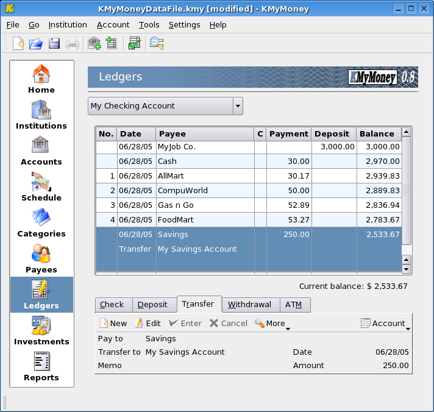
To view the transactions associated with a particular account, first select the active account from the drop down menu on the top of the screen. Depending on the account type, the information fields presented in the transactions will change.
Each transaction is listed on a separate line, with varied columns between all the different account types. Below, the information columns for each account type is explained. For brevity, the definitions are not repeated if they have already been defined in earlier account listings.
Checkings, Savings, Cash
Nr. - The cheque number (not available for Savings).
Date - date of transaction.
Payee - name of the receiver.
C - indicates not cleared (blank), cleared (C), or reconciled (R). A cleared transaction indicates the funds indicated in the transaction have been deposited or withdrawn. A reconciled transaction has been verified against a financial statement.
Payment - amount being paid to the Payee.
Deposit - amount received from the Payee.
Balance - the balance on the account at the end of the transaction.
Credit Card
Nr.
Date
Payee
C
Charge - charges made against the credit card by the Payee.
Payment - payments made to the credit card by the Payee.
Balance
Loan
Date
Payment - payment number.
Payee
Amount - total payment made, including interest amount.
Amortization - amount the loan is reduced by.
Balance - money still owing.
Investments
Date
Security - name of the investment.
Activity - buy, sell, etc.
C
Amount - number of shares.
Price - price per share.
Value - total value of transaction.
Asset
Nr.
Date
Payee
C
Decrease - the amount the value of the asset has decreased by.
Increase - the amount the value of the asset has increased by.
Balance
Liability
Nr.
Date
Payee
C
Increase - increasing the money you owe.
Decrease - decreasing the money you owe.
Balance
To enter a transaction, first ensure that you have selected the correct account. To start entering a new transaction, double-clicking the empty line below the last transaction, or click the New button in the input area at the bottom of the screen. The fields in the input area then become available for entering information.
The fields in the input area match the information fields in the transactions list. Additional fields include the Memo field, for a more detailed description of the transaction and a Category selection. The Split button allows for the transaction to be split into multiple categories.
There are several types of transactions, depending on the account type. The list below provides a quick description of the transaction types.
Deposit - add money to the account.
Transfer - transfer money from one account to another. The account that the transfer involves is specified in the category field.
Withdrawal - remove money from the account.
Cheque - transactions involving cheques.
ATM - transactions involving the ATM.
Increase - increase a liability or an asset.
Decrease - decrease a liability or an asset.
Payment - refund or payment on a credit card.
Charge - purchase made on a credit card.
To remove a transaction, bring up the Transaction Options menu by right-clicking on a transaction in the transaction list, or pressing the More button in the input area. To edit a transaction, double-click the transaction or press the Edit button, and change the fields to the new values.
Additional options are available from the Transaction Options menu, accessed either by right-clicking a transaction in the list or pressing the More button in the bottom input area.
Options include jumping to the Payee's page, creating a schedule, and changing reconciled or cleared indication.
To edit the account information from this view, press the Account button to bring up the Account Options menu. From this menu, you can change the account details, or bring up the Reconcile menu, which allows you to match transactions against an official bank statement or credit card notice.
Table of Contents
Investments are instruments for investing money that are traded on a market. Stocks, bonds, and mutual funds are the most common investments, so they're the ones supported most directly. Futures, commodities, options and more complex derivatives are also sometimes used, but KMyMoney has no special functionality for them. As long as they behave like a stock or a bond, they can be tracked easily.
Each investment has a Base Currency. This is the currency it's traded in. When a price quote is entered for an investment, the currency of the value given is always its base currency. A stock on the NYSE would be in US dollars, and one on the Australian markets would be in Australian dollars.
Investment Accounts hold a collection of investments. Transactions, such as buys and sells, of those investments are contained in an Investment Account.
Often an investment account has an associated Brokerage Account. This is also sometimes referred to as a "Cash Account". Investment accounts cannot contain cash transactions, like a transfer from your bank. When a stock is sold, the proceeds are typically placed in the Brokerage Account.
When you create an Investment Account, you have the option of creating an associated Brokerage Account with it.
The first step on the path to working with investments is to create an account to hold your investments. Choose -> to begin the process of adding a new account. Create an account as usual, making sure to choose "Investment" as the type of account.
To work with the new investment account, navigate to the view, and choose the account you just created from the Select Account drop-down box.
To add individual Investments to your Investment Account, navigate to the view, and choose the account where the investment is held from the Select Account drop-down box. Ensure you are looking at the tab.
Right-click the mouse in the empty space in the view. This brings up the context menu. Choose from this menu. This launches the New Investment Wizard which you use to create your new Investment.
If you are using Online Quotes, ensure that the symbol exactly matches the symbol used by your quote source. Yahoo covers most of the world's markets, and requires a suffix on the end of symbols outside the US. For example, Rubicon Limited on the New Zealand market should be entered as "RBC.NZ".
The Investment Summary tab lists your current holdings in this account, along with their price and value.
It's also the place to add, edit or delete indivdual investments from this account. Likewise, you can update the price of your investments here either manually or via their online source. To perform any of these, right-click the mouse on any of the investments to bring up the context menu.
KMyMoney has the ability to download the latest prices for your investments and currencies via the web. At your request, it will fetch a page from the web that contains the latest price for each item. By default, prices are fetched from finance.yahoo.com, and are subject to the terms and conditions of that site.
The online quote lookup uses the investment's trading symbol to find the price. Therefore, it's important to set the symbol correctly. Yahoo supports stocks from most major world markets, so it's usually just a matter of finding the correct symbol. For example, TietoEnator trades on the Stockholm Stock Exchange market, and its Yahoo symbol is TIEN.ST.
In order to get online price quotes, you first have to enable it for each investment or currency you want updated by setting a "Online Quote Source". This is the name of the service from which the quote should be fetched. KMyMoney ships with several sources to choose from. Yahoo is the recommended default source, and should work for most investments and all currencies.
To assign a quote source to an investment, navigate to the investment summary view for the account in which the security is held. Edit the security by right-clicking it and selecting "Edit". Choose the "Quote Source" tab. Pick the appropriate source from the drop-down menu.
To assign a quote source to a currency price, choose the price editor from the Tools menu. Select a currency pair, and edit it. Choose the "Quote Source" tab. Pick the appropriate source from the drop-down menu.
Typically, you will update the prices for all your investments and currencies at once. Choose the Online Price Quote option from the tools menu, and press "Update All"
Editing or adding quote sources is not recommended for anyone but the most technical user. You should feel comfortable reading HTML, and writing complex regular expressions. If this doesn't sound like you, we recommend writing to the developer's list if none of the quote sources work for you. Ideally, please point us to a web page where these quotes can be obtained.
If you do feel up to the challenge, here's how it works. The quote sources are contained in the settings dialog. Choose "Configure KMyMoney" from the Tools menu. From there, choose the "Online Quotes" section. You can choose an existing source to edit, or create a new one. When you are done with your changes, be sure to press the "Update" button before exiting the dialog. Your changes are not saved by default.
The first thing to worry about in an online quote source is the URL. This is the page that is fetched from the web. You will see a %1 in all sources, and a %2 in currency sources. For investments, %1 is replaced by the trading symbol. For currencies, %1 is replaced by the From currency, and %2 is replaced by the To. This URL is then fetched, all HTML tags are removed, and that stripped file is then sent to the page parser.
Note that the URL can also be a file: URL, which the quote fetcher takes to mean an executable script. It will pass any command-line arguments to it that you have specified, and feed the stdout to the page parser. For example, you might have a script called getquote.sh that contained custom quote logic, taking the symbol as a single paramenter. Your URL would be "file:/path/to/getquote.sh %1".
The page parser looks for a symbol, a date, and a price. Regular expressions tell it how to rip those items out of the page. Please review the documentation for the QRegExp class at doc.trolltech.com for the exact makeup of the regular expressions. There should be exactly one capture expression, surrounded by parentheses, in each regexp. The date format further tells the date parser the order of year, month, and day. This date format should always be in the form "%x %x %x". where x is y, m, or d. The date parser is very smart. "%m %d %y" will parse "December 31st, 2005" as easily as "12/31/05". Two digit years are interpreted as being in the range of 1950-2049.
Table of Contents
KMyMoney supports the use of multiple currencies in different accounts. For example, you can setup a bank account in Euro, another in British Pounds and yet your credit card account is maintained in US Dollars.
Once you create a KMyMoney file you will be asked for the base currency. The base currency is the one that all income and expense categories use and that the reports will be based on. Usually, the base currency is the currency you use in your country. Once selected, the base currency cannot be changed. If not otherwise selected, new accounts will use this currency as the default.
If you create a new account you have the option to specify the currency in which it will be managed. The ledger for the account will then show all values in the selected currency. The new account wizard defaults this setting to the base currency.
Whenever a transaction is entered that refers to more than one currency, the exchange rate editor pops up and allows you to enter an exchange rate. Initially, the current price available from the price data base will be used as exchange rate. See Entering exchange rates for currencies for more information on how to provide exchange rates manually and obtain online price information.
Optionally, the exchange rate is saved in the price data base once entered by the user.
Table of Contents
The reports in this section show your income and expenses either for the current month, or for each month in the current year. Of course, the duration of the overall report and the duration captured by each column can be configured to your liking.
Here there are reports that describe your net worth, either at the current moment, or every month for the current year, or every year of your history. There are also reports to get the balances for all of your accounts at any given point in time.
This section includes reports that list out your individual transactions. This is the best way to print your account register for a specific period of time.
They can be grouped together according to your liking by choosing the appropriate report:
By Account
By Category
By Month or Week
By Payee
These reports help you keep track of your investments. They only include investment accounts.
Investment Transactions. Similiar to a Transactions report, and including the share price and quantities.
Investment Holdings by Account. Shows the current shares, price, and value for each account.
Investment Holdings by Type. Same as the previous report, but organizes the accounts by type (Stock, Mutual Fund, etc)
Investment Performance by Account. Shows the annualized performance over any period of time. This performs a cash flow analysis of all money coming into and going out of the account. As a result, this is a very accurate picture of how well your investments are doing.
Investment Performance by Type. Same as the previous report, but organizes the accounts by type (Stock, Mutual Fund, etc)
The tax reports are just like the Transactions report, with the addition that only Tax categories are included. This allows you to flag certain categories as being tax-related, and then get one big report at the end of the year to see them all in one place
This section lists all the reports you have marked as your favorite in the report configuration dialog. They are still listed in one of the other sections, but they're also aggregated here for your easy reference. Favorite reports are also included on the financial summary page for even easier reference.
To access the report configuration dialog, bring up the report you wish to configure, and press the "Configure" button at the top of the report.
There are a number of actions you can take on each report. You can access these by right-clicking the report name in the list of reports. Alternately, once you have run a report, there are buttons across the top of the view to invoke each of these:
Save: Reports can be saved in HTML or CSV format.
Copy: They can be copied to the clipboard to paste them in another application, like a spreadsheet, for further analysis.
Print: You can print them to your favorite printer.
Delete: Customized reports can be deleted. The default reports that ship with KMyMoney cannot be deleted.
New: Create a new customized report based on the selected report.
Configure: Change the properties of this report.
Any of the default reports which ship with the program can be customized to your liking. This can be done with an easy-to-use dialog. No special programming knowledge is required. Customizing allows you to select a subset of accounts, for example, or change the date period of the report, or choose only a single payee, etc. The possibilities are nearly endless. When you customize a default report, it creates a new report. Initially it is named the same as the old report with "Custom" added to the end. You can change the name to whatever you want. You can even name your custom reports the same as a default report, or the same as another custom report. There are no limits in this area. You can always use the Comment field to further distinguish reports.
On this tab, you set the basic properties of this report.
Report Name: Choose a name for this report.
Comment: Enter a comment to help you remember the details of this report.
Convert values to base currency: Select this option to convert all values in the report to your base currency. Leave it unchecked if you'd like to see values in their original currency. If currencies are not converted, then subtotals will not be shown.
Mark as a favorite report: Select this option to notate this report as one of your favorites. All your favorite reports are grouped in one place on the report list for easy access.
On this tab, you configure how you'd like the rows and columns to be selected and organized.
For income/expense and net worth reports:
Columns: Choose how large of a time period each column should encompass
Rows: Choose what kind of accounts to display as the rows of this report
Show Top Categories Only: Select this option to summarize all sub-categories into a single line for each Top Category
For transaction reports:
Organize by: Choose how to group the transactions in this report
Show Columns: Choose which columns should be shown in the report. The date and transaction amount are always shown.
Table of Contents
The KMyMoney GnuCash importer handles direct reading of standard (XML) files as produced by GnuCash version 1.8. The following are not supported
import of database (Postgres) data
import of 'multi-book' files
import into an existing KMyMoney file
export to GnuCash files.
The import will probably only work correctly if presented with a valid file. It is recommended that the GnuCash 'Check & Repair All' function (in the Actions menu) be run before attempting to import.
Files can be opened by specifying the file name on the command line (kmymoney <filepath>), or by means of the KMyMoney -> (Ctrl-O) or -> menu items.
The similarity between the two products means that much day-to-day data can be imported in a straightforward fashion. However, there are some areas where differences arise, and various options are provided to deal with these. The following sections will describe some of these differences; understanding them should lead to a smoother importation.
It should be noted that KMyMoney is a personal finance manager, and as such, does not directly support any of the business features of GnuCash, such as tax tables, payroll, and tracking of lots. Any Accounts Payable or Receivable accounts found in a file will be imported as Liability or Asset accounts respectively.
For both products, the highest level of structure in the file is the account. KMyMoney supports 5 main types of account, Asset, Liability, Income, Expense and Equity, each of which may have various subtypes. KMyMoney includes a 'standard' account for each of these five types, and all other accounts are held subordinate to one of these. KMyMoney enforces more consistency (or less flexibility, depending on your point of view) between account types than does GnuCash, and the importer will correct any inconsistencies it detects. This may result in a slightly different account structure, though this can, within reason, be amended after the import is complete.
KMyMoney uses the term Category to denote an account of an Income or Expense type. Unlike GnuCash, these are not considered as 'ledger' accounts and entry of transactions directly is not currently supported, all postings being made by splits (see below).
GnuCash supports the use of Placeholder accounts. In effect, these are just read-only accounts into which no transactions can be entered, but which function in an analogous fashion to folders in a directory structure, as a holder for other accounts. Though KMyMoney does not support this feature as such, it does provide a parent/child account relationship, so the importer simulates placeholders by creating empty accounts.
As with GnuCash, data is entered in the form of transactions, each generally consisting of 2 or more split entries. In fact, valid GnuCash transactions will always contain at least 2 splits, and to conform to GnuCash's double-entry bookkeeping standard, these must be in monetary balance (i.e. must balance out to zero). KMyMoney encourages, but does not enforce, this standard.
KMyMoney prefers that all transactions have a Payee (a generic term that encompasses both payees and payers), and unlike GnuCash, a list of these payees is maintained. Payee names are generated by the importer from the GnuCash transaction's Description field. Splits are allocated to a dummy 'Unknown Payee' account where this field is blank.
KMyMoney uses the term Transfer to describe a transaction which does not involve a Category, but only transfers money between Asset and/or Liability accounts.
GnuCash uses the term Commodity to cover both currencies and non-currency assets. These are treated separately in KMyMoney.
KMyMoney has inbuilt support for all foreign currency types. KMyMoney also requires that the user specify a base currency, this being the default currency for new accounts. The importer will attempt to determine the most likely base currency, though this choice may be rejected in favour of an alternative.
Non-currency assets (normally stocks and bonds) are called Securities by KMyMoney, and represent the main difference between the two products, in that KMyMoney requires any account denominated in a security to be subordinate to an Investment Account. This is described in more detail in the chapter on Investments. Though users may have implemented such a relationship in a GnuCash file, the latter imposes no defined structure on it, so the importer is unable to detect it and perform an automatic conversion. Three options are therefore made available:
Create a separate Investment account for each security, with the same name as the security
Create a single Investment account which will act as 'parent' for all security accounts
Create several Investment accounts, and assign securities to them as directed by the user.
It depends entirely on user requirements which of these options is relevant in each situation, and in some cases, manual restructuring of accounts after importation may be necessary.
Security prices and currency exchange rates as displayed in the GnuCash Price Editor will be imported. In addition, price and rate entries will be generated from all transactions involving securities and multiple currencies.
For obtaining online price and currency rate quotations, GnuCash uses a package called Finance::Quote. KMyMoney does not support this, and has its own methods, covered in more detail in online quotes. Obtaining a quote requires a currency or stock (ticker) symbol, and these are imported unchanged into KMyMoney. The source from which the quote is to be obtained, however, cannot be imported. Instead the following dialog will allow selection of a 'native' KMyMoney price source, or a user-defined source, for each account for which online quotes are required.
(FIXME: GnuCash Price source dialog screenshot)
KMyMoney does not retain the separation made in GnuCash between template transactions and their frequency of occurrence. Transaction data will be duplicated if the same template is used in different schedules, but this is not likely to be of great significance.
KMyMoney classifies all schedules as one of three types, Bills, Deposits and Transfers. Since GnuCash does not make such a distinction, the importer attempts to determine the classification from the accounts and direction of money movements. It may be that in some cases incorrect assumptions are made, and these will need manual correction.
Some features of GnuCash scheduled transactions are not available in KMyMoney, so the importer tries in each case to reach a reasonable compromise in converting the data. These transactions will be flagged as suspect, and the user will be given the option of editing them directly during the import process. Examples of situations which may cause this are:
some frequency intervals supported in GnuCash are not currently available in KMyMoney
KMyMoney does not support the use of formulae and variables in amount fields
complex cases which have not yet been identified for import.
Despite best efforts, it is possible that, due to the many options involved, a scheduled transaction may cause a fatal error within KMyMoney. If this sort of problem seems to be occurring, the importer offers the option to drop all suspect schedules.
KMyMoney provides a comprehensive selection of configurable reports, described in more detail in Reports. These will not necessarily, however, match precisely those reports available in GnuCash.
(FIXME: screenshot of import options dialog)
These need only be used in the event of import problems, which in
any case should be reported to the KMyMoney developer list <kmymoney2-developers@lists.sourceforge.net>.
Note that the traces produced by these options may
contain data of a confidential nature, and the Anonymize option
should be used if they are to be made publicly available.
At the end of processing, the importer produces a report showing the number of different entities processed, and any errors or anomalies encountered. This report will be displayed on screen, and may be saved to a file for later review. A full report may contain the following sections:
Record counts
Inconsistencies in account types and actions taken
Details of suspect schedules
(FIXME: Screenshot of report)
Generally speaking, the QIF format should be avoided wherever possible. It is a poor choice for transporting financial data. Among other thing, QIF suffers from these problems:
Lack of standardized format. Different versions of the same program will impart different meanings to the same element.
Lack of transaction identifier. Because there is no ID number associated with each transaction, matching duplicates is haphazard at best.
Lack of expressiveness. The grammar is really simple, and cannot portray the depth of financial information found in today's financial environment.
This is generally why Intuit stopped supporting QIF input at all with Quicken 2005. If you have the option of getting data some other way, like OFX, always choose that option.
From the File menu, choose Import, and then QIF. This brings up the QIF import dialog, which will ask you for the location of the file, and ask which QIF Profile you want to use. The QIF Profile is very important, because all QIF files are different. Please be sure it is set up correctly before continuing. See the next section for more details on that.
The first thing the importer will do is ask you which account to import the transactions into. If there are transactions from multiple accounts in your file, you will be asked this question multiple times.
After importing, some of your transactions may be flashing red in the ledger. This is because they need to be assigned a category. The importer was not able to automatically assign a category based on your past transaction history.
Please note that if you are importing a file with investment transactions, those investments must first exist in your KMyMoney file. The trading symbol is used to match, so please ensure that the symbol in KMyMoney is exactly the same as the one in the file you're importing.
Because there is no universally standard format for the QIF file, different vendors have taken liberties with the format, and introduced their own nuances. Therefore, you must create a QIF Profile before you can import a QIF file. This profile tells KMyMoney about the peculiarities of your file. To edit an existing QIF Profile, or to create a new one, press the "New" button on the QIF Import dialog, near the profile selector.
The most commonly changed thing between QIF implementations is the date format. So if this is the first time you're importing a QIF file, spend a few moments to figure out what format the dates are in, and set the QIF Profile accordingly. See the discussion below on apostrophe format for more details.
Many common QIF writers use a 2-digit representation for the year. This is ambiguous, because the importer cannot know which century the date belongs in. To make things even more complicated, QIF files will often used an apostrophe as a year separator to indicate that the date belongs in the OTHER century from the default.
For example, if the default century is 1900-1999, the date 12/31/95 would mean 1995. The date 12/31'05 would mean 2005.
Because the QIF format is not standardized, it's impossible to know which century is desired. This is why you have to explicitly state it in the QIF profile. You do this by specifying which century is intended when an apostrophe is found. In the example above, you would set the Apostrophe Format to "2000-2099", so dates with an apostrophe will be interpreted as being > year 2000. In this case, dates without an apostrophe will be treated as being in the 1900's.
As noted previously, one of the major drawbacks of the QIF format is the lack of a unique identifier for each transaction. Thus, if you import a QIF file and some of the transactions are already in your ledger, you may get duplicates. KMM attempts to get around this by looking for transactions that look similiar to those you already have. If it finds something that looks like the same transaction, it will discard the apparant duplicate.
This can be a problem if you have transactions that look too similar but are actually different. In this case, you can try turning off the "Attempt to match similar transactions" option in the QIF profile.
Sometimes you may have data in a custom format, like comma-separated-values (CSV), or something else unique to your situation. You can still import that file into KMyMoney using a QIF Import Filter. A filter is a custom program you write which takes your special file as input, and produces a QIF file as output. This can be a shell script, a perl script, a compiled program written in C/C++, or anything else you can dream of, as long as the system can run it.
To use it, edit your favorite QIF Profile, and select the Filter tab. Enter the location of your filter program where prompted. Then, whenever you do a QIF import using this profile, the file you select for importing will be run through your filter first.
A common problem is to convert a list of comma-separated-values into a QIF file. This is a textbook case for the awk tool. Create a script called csv2qif.awk, with the following two lines as contents:
BEGIN { FS=","; print "!Type:Bank" }
{ print "D"$1; print "T"$2; print "N"$3; print "P"$4; print "M"$5; print "^" }
Then, change the QIF keys (D,T,N,P,M) to match the order of your csv data. Set the input filter to "awk -f csv2qif.awk"
As noted previously, one of the major drawbacks of the QIF format is the lack of a unique identifier for each transaction. If you are writing your own QIF file creator (or filter, as described above), you can overcome this problem. KMyMoney supports the '#' field. The importer will interpret this as a unique transaction ID, and disregard it if the transaction is already in the system.
KMyMoney2 will import OFX files painlessly. However, this functionality is not built into the core program. You must obtain and install the OFX Importer Plugin. Once that is installed, the command to import OFX files will automatically show up under the "File | Import" menu.
If you have installed from RPM, the OFX Imported Plugin is contained within the kmymoney-ofx RPM. It should be available from whatever source you got the base kmymoney RPM. If you have built from sources, all you need to do is have the libOFX 0.7 development headers & libraries installed on your system. The KMyMoney build process will detect these and compile the plugin.
The most basic way to import an OFX file is to choose the importer from the menu bar. From the File menu, choose Import, and then OFX. If OFX does not show up under Import, you do not have the OFX Importer Plugin installed correctly. Please see the previous section.
The first thing the importer will do is ask you which account to import the transactions into. If there are transactions from multiple accounts in your file, you will be asked this question multiple times.
After importing, some of your transactions may be flashing red in the ledger. This is because they need to be assigned a category. The importer was not able to automatically assign a category based on your past transaction history. You can edit each flashing transaction in the ledger to assign a category, and it will then stop flashing red.
Please note that this section describes the "native" OFX importer. OFX files may also be imported using the AqBanking Importer Plugin if you have installed that. Note that the two importers do behave slightly differently, and they are written and supported by two different developers.
Please note that if you are importing a file with investment transactions, those investments must first exist in your KMyMoney file. The trading symbol is used to match, so please ensure that the symbol in KMyMoney is exactly the same as the one in the file you're importing.
The easiest way to import an OFX file is to set up Web Connect. Visit your bank's web site, and click on a link to download an OFX file. Your browser should ask you what program you would like to use to open the program. Point your browser to KMyMoney2. It will then import the downloaded OFX file into the KMyMoney file you most recently had open.
If you need to import the OFX file into some other KMyMoney file, load up that file in KMyMoney first, and then visit your bank.
This version of KMyMoney does not support the ability to contact your bank directly to obtain statements or make payments. However, Martin Preuss has created a program called AqBanking to do this for you. It includes a plugin which integrates seamlessly with KMyMoney. Please visit the AqBanking site for more details.
Table of Contents
The Search Transactions dialog searches your data based on criteria that you specify.
There are several tabs within this dialog. Each tab allows you to specify particular kinds of criteria. When the button is pressed, the search is initiated and all criteria that has been entered on any tab will be taken into account.
The button resets all of the criteria on all of the tabs back to the defaults. This allows you to specify new search criteria.
The button closes the Search Transactions dialog box.
The results will be displayed in the lower portion of the dialog box after the search has completed. Double-clicking on an individual transaction in the result window will bring up the appropriate ledger and display the transaction.
This tab allows you to specify text for the search criteria.
By default, this will match on simple substrings. For example:
?Best? will find ?Best Cakes, Inc.?
?est? will also find ?Best Cakes, Inc.?
If you check the Case Sensitive box, the search will be case sensitive.
If you check the Treat Text as regular expression box, the text will be treated as a regular expresssion.
This tab allows you to specify the accounts that should be searched.
Accounts are displayed in a tree format. Accounts that are marked for search are indicated with a check box. If you click the button, all accounts marked for searching. If you click the button, no accounts will be marked for searching. Individual accounts can be marked or unmarked by clicking on the box next to the account name.
This tab allows you to specify which dates should be searched.
The ?Range? control provides a convenient way to set the From and To controls. The From and To controls can be manipulated individually. Dates can be entered manually. The controls will prevent you from entering non-existing dates. Date values can also be changed by clicking on the up and down arrows. Clicking on the small calendar icon will bring up a calendar to easily select dates.
This tab allows you to specify what amounts should be searched for.
You can search for an exact amount or for a range of amounts. If you click on the calculator icon, a small on-screen calculator will pop up to assist you in entering a value.
This tab allows you to specify which categories should be searched.
Categories are displayed in a tree format. Categories that are marked for search are indicated with a box. If you click the button, all categories are marked for searching. If you click the button, no categories will be marked for searching. If you click the button, income categories will be marked and expense categories will be unmarked. If you click the button, income categories will be unmarked and expense categories will be marked.
Individual accounts can be marked or unmarked by clicking on the box next to the account name.
This tab allows you to specify which payees should be searched.
Payees that are marked for search are indicated with a box. If you click the button, all payees are marked for searching. If you click the button, no payees will be marked for searching. Individual payees can be marked or unmarked by clicking on the box next to the payee name.
If you check the Select transactions without payees box, transactions with no payee will be selected.
You can search for various detail criteria.
Type can be one of the following:
All Types
Payments
Deposits
Transfers
State can be one of the following:
All states
Not reconciled
Cleared
Reconciled
Validity can be one of the following:
Any transaction
Valid transaction
Invalid transaction
You can search for a particular transaction number or search for a range of transaction numbers.
Table of Contents
This chapter describes the formats in which KMyMoney stores it's data in permanent form on the users disk. In general, KMyMoney stores it's information in form of an XML document. Depending on the actual format, this XML document will be written
as plain text file encoded in UTF-8,
as compressed file using GZIP compression,
as encrypted file using GPG encryption or
as anonymous plain text file encoded in UTF-8 but with all your personal data scrambled.
This is the most space consuming format supported as no compression is performed. It is usually not used by normal
user and provided to support debugging purposes and the capability to modify the file manually. If you end a filename in .xml the file will be stored in this format.
Caution
Manual modification of the file is not recommended to the normal user and should only be performed if the internal working of KMyMoney is fully understood or instructions from the developers tell you what to do. Don't blame the KMyMoney developers if you screw up your data: You have been warned!
This is the normal format used by KMyMoney when you store a file with the extension .kmy
Note
If encryption has been selected, the file will be stored encrypted.
If you want to look at a GZIP compressed file, rename it to a filename ending in .gz (e.g. myfinances.kmy into myfinances.kmy.gz, then use gunzip to uncompress the file and look at it. You don't have to compress it before loading it into KMyMoney the next time, because KMyMoney can read the uncompressed data as well. Nevertheless, if you save it thereafter, it will be saved compressed again. Use the .xml extension to write it in uncompressed format.
Using the GPG-encrpyted file format is a very secure method to store your personal finance data on your disk. When KMyMoney has been instructed through the settings dialog to store your data encrypted, it will cipher the data using GPG and the key you provided before actually storing it on disk. When opening an encrypted file, you have to provide the passphrase necessary to open your keyring. The encrypted file itself will be stored in GPG's ASCII armored format.
Note
When using GPG encryption, GPG also compresses the file, so no extra compression is necessary.
If you have not done so already for mail encryption, you need to generate a key-pair in order to be able to use the GPG encryption feature of KMyMoney. Also, GPG must be installed on your system.
The details about howto generate a key-pair, howto take care of it are beyond the scope of this document. A Mini Howto on this subject can be found at http://webberr.dewinter.com/gnupg_howto/english/GPGMiniHowto.html.
On the security page of the settings dialog you have a field where you can enter the key-id of the key that should be used for encryption and decryption. You can use either the key-id, the e-mail address associated with this key or any other valid GPG key identification as value for this field. When you enter the key-id, KMyMoney will check it's validity and turn on a green LED in the dialog if a key is found.
Caution
Make sure, you have both, the public and the private key for this id. If you don't own the private key for the id entered, you will not be able to open the file again.
Also on this page of the settings dialog you have the choice to select supplemental encryption with the KMyMoney recover key. This option is available to you, if that key is stored in your GPG keyring. Selecting this option will allow you to recover your data even in the case you loose your own private key. This is possible, because the data is not only encrypted for your own key, but also for the KMyMoney recover key. This key is only available to selected KMyMoney developers (at the time of writing only to the author).
Under normal circumstances, you will open/save/close your file as usual. In the abnormal case of loss of your key, you have the chance to contact one of the developers who has access to the KMyMoney recover key and request help to recover your data. You may contact the developers via e-mail to the KMyMoney developer mailing list at <kmymoney2-developers@lists.sourceforge.net>.
This format is not intended to be used for normal data storage. It is supported as a method to supply the KMyMoney development team with your file in case of a problem without disclosing any of your financial data. If instructed by the developers use the menu item to store your data in anonymous format by selecting .anon.xml as file extension. To verify that your problem still exists, reload this anonymized file and try to duplicate your problem. If it shows, send the file to the developer mailing list at <kmymoney2-developers@lists.sourceforge.net> for further investigation. If the problem does not show ... well, I don't want to think about this scenario right now.
Table of Contents
...
- -> (Ctrl-n)
Creates a new empty file. Only one KMyMoney file can be open at once, so this will close your current file first.
- -> (Ctrl-s)
Saves the currently open file
- -> (Ctrl-q)
Quits KMyMoney
KMyMoney has some specific widgets not found in other applications. The usage of these widgets are explained in this chapter.
Whenever KMyMoney needs information about a specific date, eg. the posting date of a transaction of the opening date of an account, it presents the user the date entry widget. This widget consists of three fields and a button. The fields present the day, the month and the year seperated by the respective date separator characters depending on your locale settings. The button - if pressed - opens the datepicker widget.
FIXME: add picture of widget
The left/right cursor keys can be used to switch between the day, the month and the year field. Using the up/down cursor keys, the value of the selected field can be incremented/decremented. The '+' and '-' key can be used to increment/decrement for one day. Month and year boundaries are considered and incremented/decremented if necessary.
The date can also be changed using the mouse. Clicking into the day, month or year field selects the field. The value can then be incremented/decremented using the arrow buttons on the right of the widget. They act exactly as the up/down key.
The datepicker opens when the button to the right of the arrow buttons is pressed. It shows four arrow buttons at the top which enclose the currently selected monthname and year. The leftmost buttons are used to decrement the year and the month, the buttons to the right of the year are used to increment the month and the year. The button to the very right closes the datepicker.
Beneath the buttons, the widget presents a calendar page for the respective month. Clicking a day of the selected month selects that date, closes the datepicker and transfers the selected date into the day, month or year fields.
At the bottom of the widget the users finds a button, a text edit field and a combo box. Pressing the button selects today's date in the datepicker, the text field can be used to enter a specific date. Pressing the RETURN key shows that date in the datepicker widget. The combo box allows the user to select a specific week and continue to pick a date from there.
The value entry widget consits out of a text field that accepts digits, thousand seperators and decimal symbols as well as a button to the right. Use the digits to enter the value. Separate the fractional part by entering the decimal separator for your locale. If you click on the button to the right or press a key representing a numeric operation (eg. +,-,/,* or %) a little calculator will pop up and allows you to calculate the final value.
FIXME: add picture of widget
Use the calculator widget just like a normal calculator and once done leave it by clicking on the '=' button or press the '=' key on your keyboard.
When you are requested to select a payee/payer for a transaction, you can start entering the name by pressing keys on your keyboard. As long as matching entries exist in the list of payees/payers maintained by KMyMoney they will be presented in a box beneath or above the text entry area. Using the mouse or the up/down keys one can select a name from that list. Using the keyboard additionally requires to select the entry by pressing the RETURN key.
FIXME: add picture of widget
If a name is entered that is not yet known to KMyMoney you will be asked if you wants to create a new payee/payer record. If you do not wish to do so, then the field will be blanked. Otherwise, the record will be created and added to the list.
When you are request to enter the name of a category or acocunt, you can start entering the name by pressing keys on your keyboard. As long as matching entries exist in the list of categories/accounts known to KMyMoney they will be presented in a box beneath or above the text entry area. Using the mouse or the up/down keys one can select a name from that list. Using the keyboard additionally requires to select the entry by pressing the RETURN key.
FIXME: add picture of widget
If a name is entered that is not yet known to KMyMoney you will be asked if you wants to create a new category record. If you do not wish to do so, then the field will be blanked. Otherwise, the record will be created and added to the list.
(This section can be removed if not completed in time) (Ace)